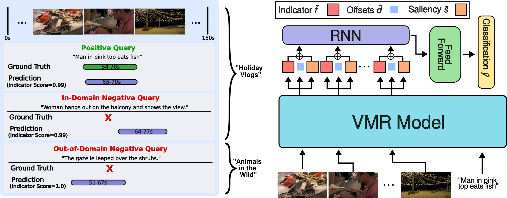
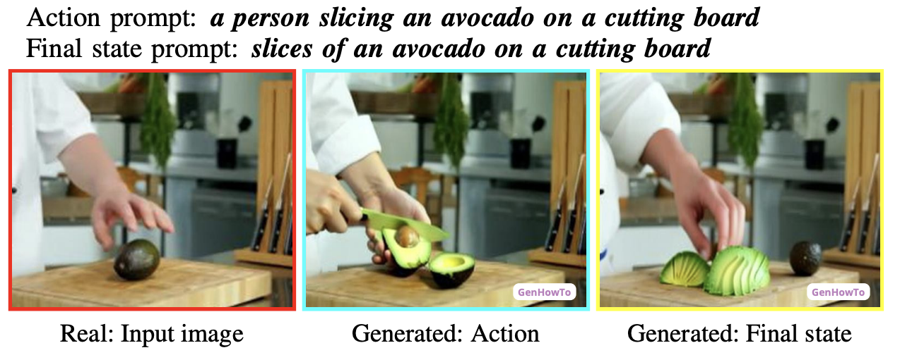

Research

|
Are you Struggling? Dataset and Baselines for Struggle Determination in Assembly Videos
Shijia Feng, Michael Wray, Brian Sullivan, Youngkyoon Jang, Casimir Ludwig, Iain Gilchrist, Walterio Mayol-Cuevas IJCV, 2025 [arXiv] [Dataset] |
|
Video, How Do Your Tokens Merge?
Sam Pollard, Michael Wray CVPRW, 2025 [Website] [arXiv] [Code] |
|
|
Leveraging Auxiliary Information in Text-to-Video Retrieval: A Review
Adriano Fragomeni, Dima Damen, Michael Wray arXiv, 2025 [arXiv] |
|

|
Leveraging Modality Tags for Enhanced Cross-Modal Video Retrieval
Adriano Fragomeni, Dima Damen, Michael Wray arXiv, 2025 [arXiv] |

|
HD-EPIC: A Highly Detailed Egocentric Dataset
Toby Perrett, Ahmad Darkhalil, Saptarshi Sinha, Omar Emara, Sam Pollard, Kranti Parida, Kaiting Liu, Prajwal Gatti, Siddhant Bansal, Kevin Flanagan, Jacob Chalk, Zhifan Zhu, Rhodri Guerrier, Fahd Abdelazim, Bin Zhu, Davide Moltisanti, Michael Wray, Hazel Doughty, Dima Damen CVPR, 2025 [Webpage] [arXiv] [Annotations] [Videos] |
|  |
Moment of Untruth: Dealing with Negative Queries in Video Moment Retrieval
Kevin Flanagan, Dima Damen, Michael Wray WACV, 2025 [Webpage] [arXiv] [Code] |
|
ShowHowTo: Generating Scene-Conditioned Step-by-Step Visual Instructions
Tomáš Souček, Prajwal Gatti, Michael Wray, Ivan Laptev, Dima Damen, Josef Sivic CVPR, 2025 [Webpage] [arXiv] [Code] |
|

|
SHARP: Segmentation of Hands and Arms by Range using Pseudo-Depth for Enhanced Egocentric 3D Hand Pose Estimation and Action Recognition
Wiktor Mucha, Michael Wray, Martin Kampel ICPR, 2024 [arXiv] [Code] |

|
HOI-Ref: Hand-Object Interaction Referral in Egocentric Vision
Siddhant Bansal, Michael Wray, Dima Damen arXiv, 2024 [Webpage] [arXiv] [Code] |

|
Video Editing for Video Retrieval
Bin Zhu, Kevin Flanagan, Adriano Fragomeni, Michael Wray, Dima Damen Twelfth International Workshop on Assistive Computer Vision and Robotics ECCV, 2024 [arXiv] |
|  |
GenHowTo: Learning to Generate Actions and State Transformations from Instructional Videos
Tomáš Souček, Dima Damen, Michael Wray, Ivan Laptev, Josef Sivic IEEE/CVF Computer Vision and Pattern Recognition (CVPR), 2024 [Webpage] [arXiv] [Code] |
|
Ego-Exo4D: Understanding Skilled Human Activity from First- and Third-Person Perspectives
Kristen Grauman, Andrew Westbury, Lorenzo Torresani, Kris Kitani, Jitendra Malik, Triantafyllos Afouras, Kumar Ashutosh, Vijay Baiyya, Siddhant Bansal, Bikram Boote, Eugene Byrne, Zach Chavis, Joya Chen, Feng Cheng, Fu-Jen Chu, Sean Crane, Avijit Dasgupta, Jing Dong, Maria Escobar, Cristhian Forigua, Abrham Gebreselasie, Sanjay Haresh, Jing Huang, Md Mohaiminul Islam, Suyog Jain, Rawal Khirodkar, Devansh Kukreja, Kevin J Liang, Jia-Wei Liu, Sagnik Majumder, Yongsen Mao, Miguel Martin, Effrosyni Mavroudi, Tushar Nagarajan, Francesco Ragusa, Santhosh Kumar Ramakrishnan, Luigi Seminara, Arjun Somayazulu, Yale Song, Shan Su, Zihui Xue, Edward Zhang, Jinxu Zhang, Angela Castillo, Changan Chen, Xinzhu Fu, Ryosuke Furuta, Cristina Gonzalez, Prince Gupta, Jiabo Hu, Yifei Huang, Yiming Huang, Weslie Khoo, Anush Kumar, Robert Kuo, Sach Lakhavani, Miao Liu, Mi Luo, Zhengyi Luo, Brighid Meredith, Austin Miller, Oluwatumininu Oguntola, Xiaqing Pan, Penny Peng, Shraman Pramanick, Merey Ramazanova, Fiona Ryan, Wei Shan, Kiran Somasundaram, Chenan Song, Audrey Southerland, Masatoshi Tateno, Huiyu Wang, Yuchen Wang, Takuma Yagi, Mingfei Yan, Xitong Yang, Zecheng Yu, Shengxin Cindy Zha, Chen Zhao, Ziwei Zhao, Zhifan Zhu, Jeff Zhuo, Pablo Arbelaez, Gedas Bertasius, David Crandall, Dima Damen, Jakob Engel, Giovanni Maria Farinella, Antonino Furnari, Bernard Ghanem, Judy Hoffman, C. V. Jawahar, Richard Newcombe, Hyun Soo Park, James M. Rehg, Yoichi Sato, Manolis Savva, Jianbo Shi, Mike Zheng Shou, Michael Wray IEEE/CVF Computer Vision and Pattern Recognition (CVPR), 2024 [Webpage] [arXiv] |
|

|
Learning Temporal Sentence Grounding From Narrated EgoVideos
Kevin Flanagan, Dima Damen, Michael Wray BMVC, 2023 [Webpage] [arXiv] [Code] |

|
ConTra: (Con)text (Tra)nsformer for Cross-Modal Video Retrieval
Adriano Fragomeni, Michael Wray, Dima Damen, ACCV (Oral), 2022 [Webpage] [arXiv] [Code] |

|
Egocentric Video-Language Pretraining
Kevin Qinghong Lin, Alex Jinpeng Wang, Mattia Soldan, Michael Wray, Rui Yan, Eric Zhongcong Xu, Difei Gao, Rongcheng Tu, Wenzhe Zhao, Weijie Kong, Chengfei Cai, Hongfa Wang, Dima Damen, Bernard Ghanem, Wei Liu, Mike Zheng Shou NeurIPS, 2022 [Webpage] [arXiv] [Code] |

|
Ego4D: Around the World in 3,000 Hours of Egocentric Video
Kristen Grauman, Andrew Westbury, Eugene Byrne, Zachary Chavis, Antonino Furnari, Rohit Girdhar, Jackson Hamburger, Hao Jiang, Miao Liu, Xingyu Liu, Miguel Martin, Tushar Nagarajan, Ilija Radosavovic, Santhosh Kumar Ramakrishnan, Fiona Ryan, Jayant Sharma, Michael Wray, Mengmeng Xu, Eric Zhongcong Xu, Chen Zhao, Siddhant Bansal, Dhruv Batra, Vincent Cartillier, Sean Crane, Tien Do, Morrie Doulaty, Akshay Erapalli, Christoph Feichtenhofer, Adriano Fragomeni, Qichen Fu, Christian Fuegen, Abrham Gebreselasie, Cristina Gonzalez, James Hillis, Xuhua Huang, Yifei Huang, Wenqi Jia, Weslie Khoo, Jachym Kolar, Satwik Kottur, Anurag Kumar, Federico Landini, Chao Li, Yanghao Li, Zhenqiang Li, Karttikeya Mangalam, Raghava Modhugu, Jonathan Munro, Tullie Murrell, Takumi Nishiyasu, Will Price, Paola Ruiz Puentes, Merey Ramazanova, Leda Sari, Kiran Somasundaram, Audrey Southerland, Yusuke Sugano, Ruijie Tao, Minh Vo, Yuchen Wang, Xindi Wu, Takuma Yagi, Yunyi Zhu, Pablo Arbelaez, David Crandall, Dima Damen, Giovanni Maria Farinella, Bernard Ghanem, Vamsi Krishna Ithapu, C. V. Jawahar, Hanbyul Joo, Kris Kitani, Haizhou Li, Richard Newcombe, Aude Oliva, Hyun Soo Park, James M. Rehg, Yoichi Sato, Jianbo Shi, Mike Zheng Shou, Antonio Torralba, Lorenzo Torresani, Mingfei Yan, and Jitendra Malik IEEE/CVF Computer Vision and Pattern Recognition (CVPR) 2022 [Webpage] [arXiv] [Dataset] |

|
Domain Adaptation in Multi-View Embedding for Cross-Modal Video Retrieval
Jonathan Munro, Michael Wray, Diane Larlus, Gabriela Csurka, Dima Damen ArXiv, 2021 [arXiv] |

|
Rescaling Egocentric Vision
Dima Damen, Hazel Doughty, Giovanni Maria Farinella, Antonino Furnari, Jian Ma, Evangelos Kazakos, Davide Moltisanti, Jonathan Munro, Toby Perrett, Will Price, and Michael Wray Springer International Journal of Computer Vision (IJCV), 2021 [Webpage] [Dataset] |

|
On Semantic Similarity in Video Retrieval
Michael Wray, Hazel Doughty, and Dima Damen IEEE Conference on Computer Vision and Pattern Recognition, 2021. [Webpage] [arXiv] [Code] [pdf] |

|
Supervision Level Scales
Dima Damen, Michael Wray arXiv, 2020 [arXiv] |
|
Fine-Grained Action Retrieval Through Multiple Parts-of-Speech Embeddings
Michael Wray, Diane Larlus, Gabriela Csurka, and Dima Damen IEEE International Conference of Computer Vision, 2019 [Webpage] [arXiv] [Code] [pdf] |
|

|
Learning Visual Actions Using Multiple Verb-Only Labels
Michael Wray and Dima Damen BMVA British Machine Vision Conference, 2019 [Webpage] [arXiv] [Annotations] [pdf] |
|
|
Scaling Egocentric Vision: The EPIC-KITCHENS Dataset
Dima Damen, Hazel Doughty, Giovanni Maria Farinella, Sanja Fidler, Antonino Furnari, Evangelos Kazakos, Davide Moltisanti, Jonathan Munro, Toby Perrett, Will Price, and Michael Wray Springer European Conference on Computer Vision, 2018 [Webpage] [Dataset] |

|
Trespassing the Boundaries: Labeling Temporal Bounds For Object Interactions in Egocentric Video
Davide Moltisanti, Michael Wray, Walterio Mayol-Cuevas, and Dima Damen IEEE International Conference on Computer Vision 2017 [Webpage] [arXiv] [pdf] |
|
SEMBED: Semantic Embedding of Egocentric Action Videos
Michael Wray(*), Davide Moltisanti(*), Walterio Mayol-Cuevas, and Dima Damen Egocentric Perception, Interaction and Computing Workshop at ECCV 2016 [Webpage] [arXiv] |